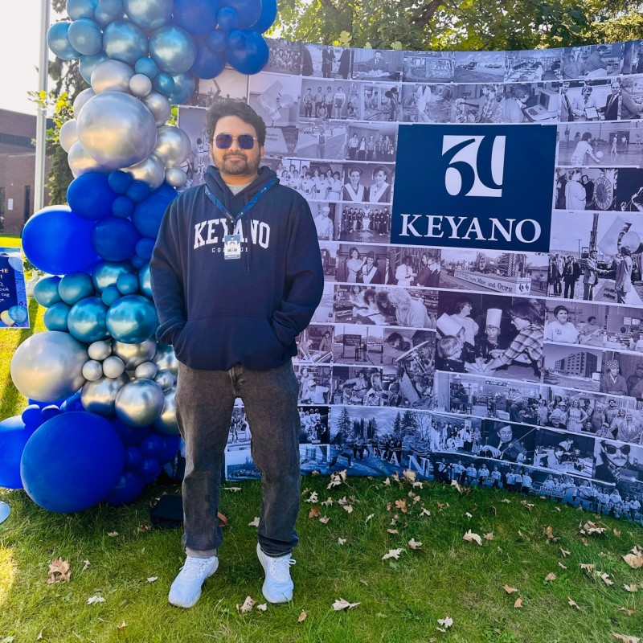
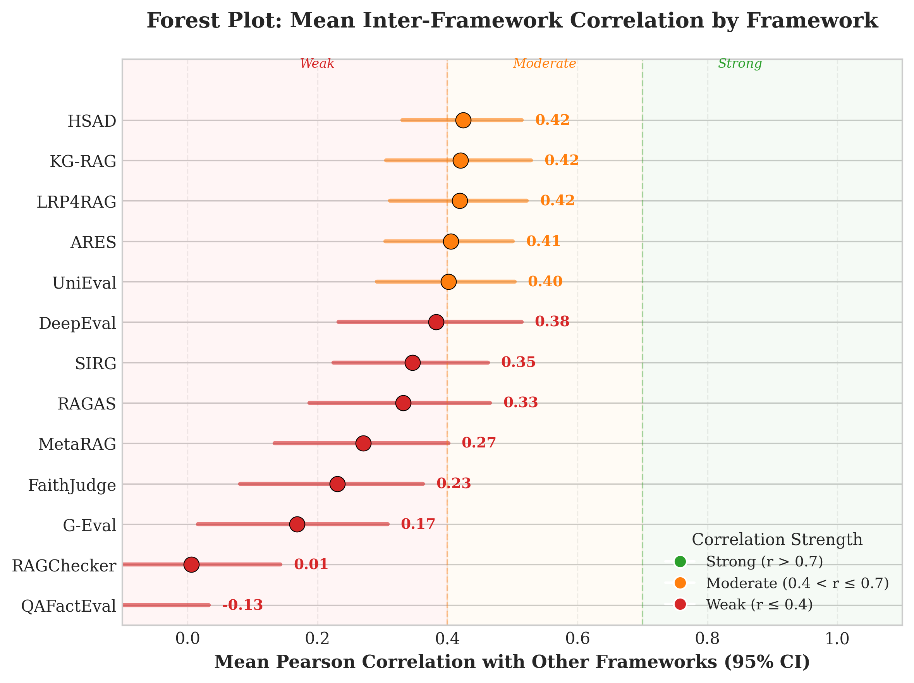
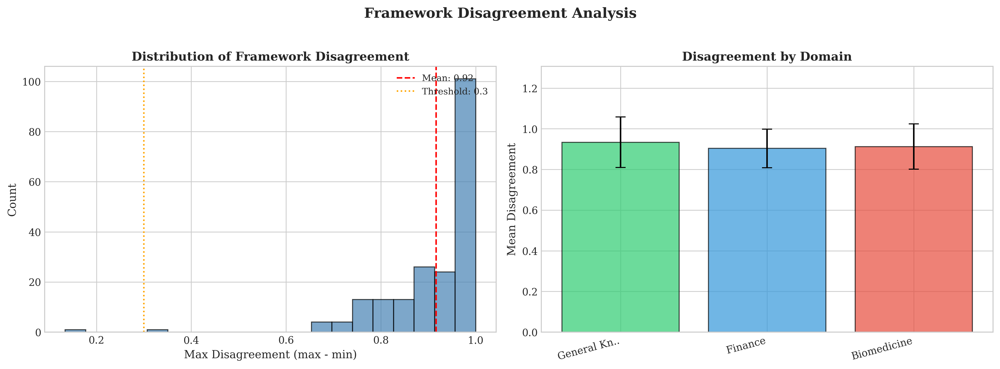
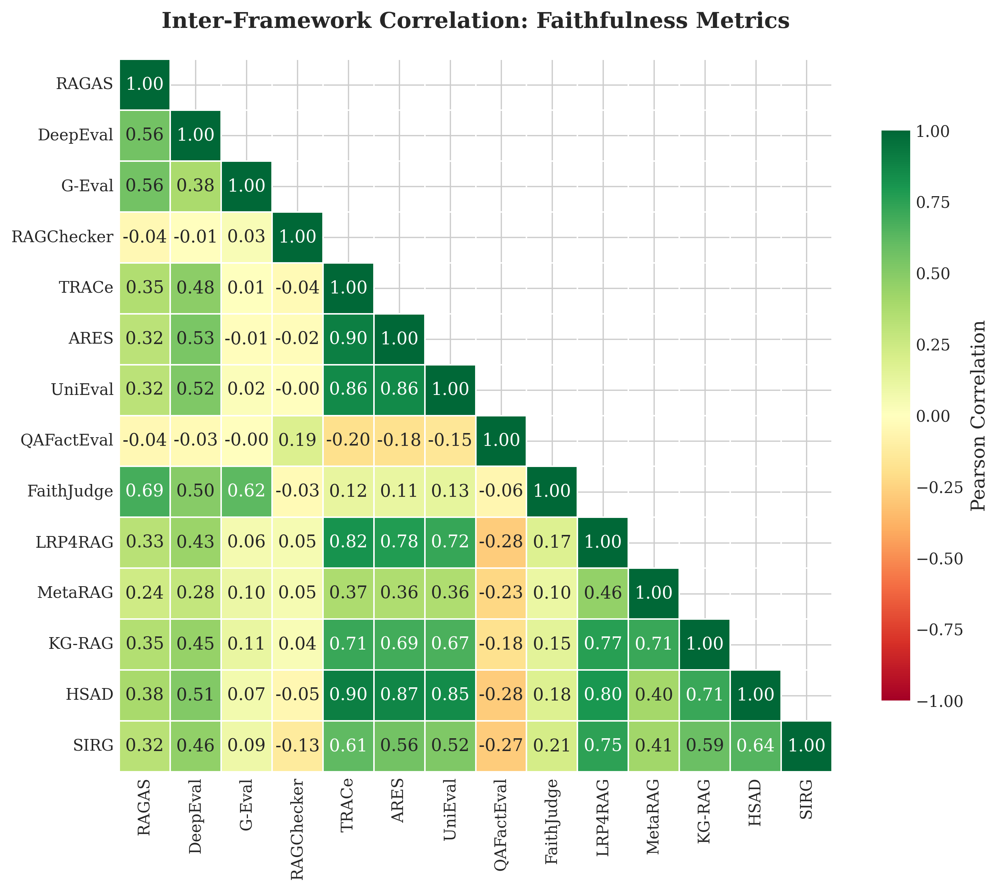
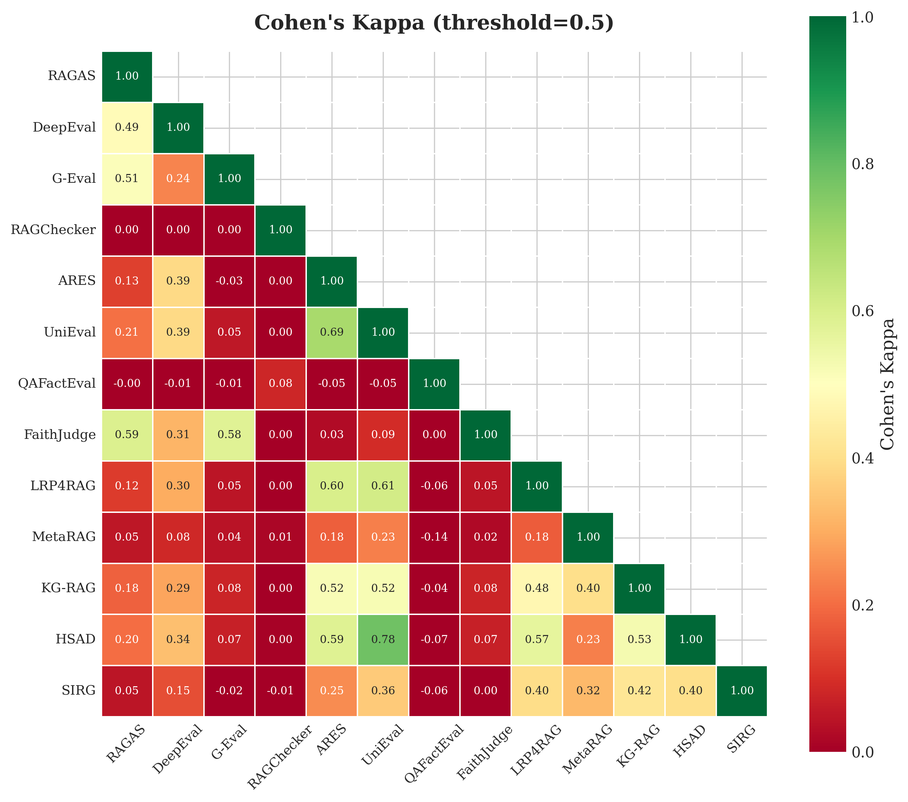
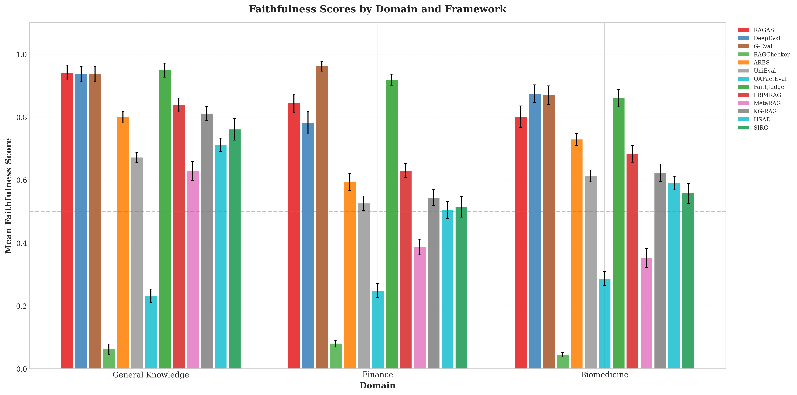
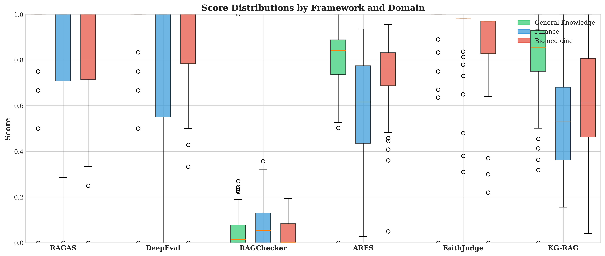
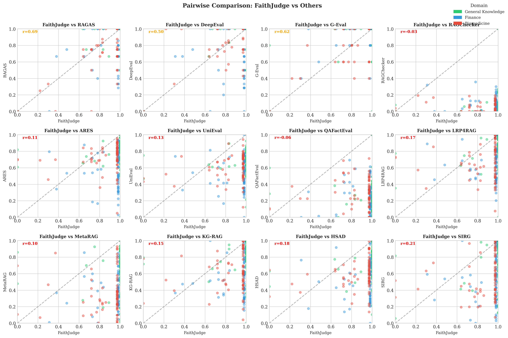

A Meta-Analysis of Evaluation Framework
Reliability and Cross-Domain Generalization
Canadian AI 2026
39th Canadian Conference on Artificial Intelligence
39th Canadian Conference on Artificial Intelligence
Paper 210
Asif Ahmed Neloy
Senior AI Engineer, Delta Controls
Adjunct Professor, Faculty of Land and Food Systems,
University of British Columbia
asif.neloy@ubc.ca
Adjunct Professor, Faculty of Land and Food Systems,
University of British Columbia
asif.neloy@ubc.ca

MD Nazmul Islam
Instructor, Computer Systems Technology,
University Studies, Keyano College
University Studies, Keyano College
Motivation
A faithfulness score matters only when the evaluator is reliable
RAG systems can return an answer that sounds useful while still requiring a separate check that its claims are supported by retrieved context.
Retrieved context
Evidence selected for the question.
>
Generated answer
A RAG answer should remain grounded in that context.
>
Faithfulness score
The score supports research claims and deployment decisions.
Paper scope
Faithfulness asks whether the answer is supported by the retrieved context.
Reliability question
Do different faithfulness frameworks give compatible conclusions on the same answer?
Talk focus: the paper tests the measurement tools used to judge RAG faithfulness.
Problem
The evaluation ecosystem makes interchangeability a testable assumption
The study compares frameworks built from different signals, so agreement must be tested on matched inputs before their scores are treated as interchangeable.
LLM-as-judge
Prompts a judge model to score groundedness or faithfulness.
NLI based
Checks entailment of claims against retrieved evidence.
Embedding and QA
Uses semantic overlap or answer consistency signals.
Interpretability
Probes internal signals for context reliance.
If these frameworks measure the same construct, their scores should align when they see identical inputs.
- Prior studies validate individual tools or compare small subsets.
- This paper asks whether framework choice is interchangeable across the broader evaluation ecosystem.
Contribution
The paper tests faithfulness frameworks under matched conditions
The design holds the sample set constant and evaluates reliability across frameworks, domains, agreement statistics, clustering, and human validation.
First comprehensive cross-framework meta-analysis of RAG evaluation reliability: twenty frameworks applied to the same 200 question-context-answer triples across three domains.
Gaps
- No comprehensive pairwise agreement study on identical RAG inputs.
- No matched test of framework behavior across general knowledge, finance, and biomedicine.
- Formal heterogeneity analysis remains rare in RAG evaluation.
Contributions
- Controlled reliability comparison of twenty frameworks.
- Meta-analytic heterogeneity and pairwise agreement analysis.
- Three empirical clusters with normalization and bootstrap checks.
- Domain effects, human validation, and cross-cluster consensus.
Definitions
The study narrows faithfulness before it measures reliability
A narrow construct definition keeps the reliability question focused on support and contradiction against context.
Working definition of faithfulness
An answer is faithful to context X if every claim in the answer is entailed by X and no claim contradicts X. Scope is deliberately narrow: support and consistency, not completeness, fluency, or relevance.
Meta-analysis for measurement reliability
The paper uses Cochran's Q and I-squared to test whether variation across independently developed instruments exceeds sampling error.
Why this axis: faithfulness is the property all twenty frameworks claim to measure.
Study design
Twenty frameworks span six method groups
The framework set covers judge models, NLI, embedding and QA metrics, classifiers, interpretability methods, and other RAG evaluation approaches.
| LLM-as-judge | RAGAS, G-Eval, DeepEval, FaithJudge |
| NLI-based | RAGChecker, HALT-RAG |
| Embedding / QA | BERTScore, UniEval, QAFactEval |
| Token-level / classifier | TRACe, ARES, LettuceDetect |
| Interpretability | ReDeEP, LRP4RAG, LUMINA, HSAD, SIRG |
| Other | GaRAGe, MetaRAG, KG-RAG |
Coverage: the framework set spans traditional metrics and interpretability methods from 2020 through 2026.
Study design
Every framework sees the same 200 RAGBench samples
The matched dataset includes general knowledge, finance, and biomedicine examples so domain variation can be separated from framework variation.
General Knowledge
67
HotpotQA, MS MARCO, HAGRID
Finance
67
FinQA, DelucionQA
Biomedicine
66
CovidQA, PubMedQA
- Every framework sees the same 200 question-context-answer triples.
- Stratified design separates domain effects from framework behavior.
Controlled by design: identical inputs let us attribute score differences to the framework, not the data.
Study design
The analysis moves from scores to reliability evidence
Each stage turns the same score matrix into a different reliability view: agreement, heterogeneity, structure, domain behavior, and external validation.
Step 1
Score matrix
Twenty primary faithfulness scores on each sample.
>
Step 2
Agreement
Correlations, bootstrap intervals, and heterogeneity.
>
Step 3
Structure
Ward clustering, normalization sensitivity, domains.
>
Step 4
Interpretation
Human validation and cross-cluster consensus.
Protocol
- Each framework runs on all 200 samples using official default configurations.
- LLM-judge: DeepSeek-V3 at temperature 0.
- NLI: DeBERTa-v3-large fine-tuned on MNLI.
- Primary scores are min-max normalized to [0, 1].
Statistics
- Pearson and Spearman agreement with 1,000 bootstrap resamples.
- Cochran's Q and I-squared heterogeneity.
- Ward clustering on correlation distance.
- Two-way ANOVA for domain effects.
- Cross-cluster consensus and human validation (n = 50).
Results · 1 of 8
Inter-framework heterogeneity is substantial
The meta-analytic tests reject a picture in which observed variation is explained by sampling error alone.
10,055.63
COCHRAN'S Q (p < 0.001)
99.81%
I-SQUARED
167 / 190
PAIRS DIFFER (p < 0.001)
0.980
MEAN PER-SAMPLE SCORE RANGE

Mean correlation of each framework with the other 19.

Per-sample score range (max minus min) across all frameworks.
Takeaway: framework choice materially changes the faithfulness score observed on identical samples.
Results · 2 of 8
Pairwise correlations range from -0.28 to 0.90
Pairwise agreement spans negative, weak, and strong correlations, with the median correlation staying low across the full framework set.
- Pearson runs from r = -0.28 (BERTScore vs MetaRAG) to r = 0.90 (TRACe vs ARES), median only 0.21.
- The correlation heatmap reveals a block structure rather than a single agreement pattern.
- RAGChecker correlates in [-0.13, 0.22] with everything; QAFactEval in [-0.28, 0.19].
Takeaway: high agreement is local to some framework pairs, not a property of the full ecosystem.

Pairwise Pearson correlation, 20 frameworks, n = 200.
Results · 3 of 8
Binary agreement confirms the pattern
Thresholded verdicts preserve the same reliability concern seen in continuous scores.
- Binarize each score at τ = 0.5, then measure Cohen's κ.
- Within a cluster: agreement up to κ = 0.69 (ARES vs UniEval), 90% raw agreement.
- Across clusters with RAGChecker or QAFactEval: κ ≤ 0.001, near chance.
Takeaway: score disagreement also appears after scores are converted into faithful or unfaithful verdicts.

Pairwise Cohen's κ at τ = 0.5. Block structure mirrors the clusters.
Results · 4 of 8
The frameworks form three empirical clusters
Clustering summarizes the score structure into groups that agree more internally than they agree with one another.
| Cluster | k | Within r |
|---|---|---|
| LLM-as-Judge | 4 | 0.55 |
| Mixed Methods | 11 | 0.63 |
| Outlier | 5 | 0.01 |
| Between clusters | n/a | 0.10 |
Normalization check
Raw, min-max, z-score, and rank transformations return identical cluster assignments. Pairwise ARI is 1.0.
Cluster count check
The gap statistic peaks at k = 3. Bootstrap co-assignment is at least 0.75 within the LLM-as-judge and mixed-methods clusters.
Outlier cluster
BERTScore, GaRAGe, HALT-RAG, QAFactEval, and RAGChecker form the low agreement group.
Takeaway: the three-cluster pattern is stable across score transformations reported in the paper.
Results · 5 of 8
Domain difficulty depends on the method
Domain effects are not uniform across frameworks, so a score shift across domains must be read together with the evaluator that produced it.
- Largest reported domain effects: KG-RAG (η² = 0.225), MetaRAG (0.222), TRACe (0.198), ARES (0.190). Smallest among LLM-as-judge: G-Eval and FaithJudge (0.039), RAGAS (0.058).

Mean score by domain, all 20 frameworks.

Score distributions by domain, six representative frameworks.
Takeaway: Finance scores lower for most frameworks, while the size of the domain effect depends on the framework.
Results · 6 of 8
The human subset favors the LLM-as-judge cluster
The human validation subset provides a separate reference point for the cluster pattern, while its size limits the strength of the conclusion.
- LLM-as-Judge: mean r = 0.51. FaithJudge 0.60, G-Eval 0.56, DeepEval 0.45, RAGAS 0.44. All significant.
- Mixed Methods: mean r = 0.19. Only SIRG significant.
- Outlier: mean r = 0.05. Near zero.
Takeaway: this is directional evidence from a 50-sample human validation subset.
| Cluster | Mean r | Highest reported r |
|---|---|---|
| LLM-as-Judge | 0.51 | FaithJudge 0.596 |
| Mixed Methods | 0.19 | SIRG 0.361 |
| Outlier | 0.05 | RAGChecker 0.243 |
Human validation subset
Pearson correlations are computed against binary human annotations for n = 50 RAGBench samples.
Results · 7 of 8
Cross-cluster consensus is usually contested
The consensus protocol asks how often representative frameworks from the three clusters produce the same binary conclusion.
- Representatives are selected by highest mean within-cluster correlation: LRP4RAG, FaithJudge, QAFactEval.
- A sample is faithful only when all three representatives score above τ = 0.5, and unfaithful only when all three score below τ.
92.5%
Contested
185 of 200 samples do not receive a unanimous binary verdict.
6.0%
Faithful
12 unanimous faithful verdicts.
1.5%
Unfaithful
3 unanimous unfaithful verdicts.
Takeaway: the paper's consensus protocol quantifies how rarely the three clusters converge on a verdict.
Results · 8 of 8
One framework, seen against the rest
The FaithJudge scatter view makes the agreement gap visible at sample level across judge peers, mixed methods, and outliers.
- FaithJudge has the highest human correlation (r = 0.60), so we plot it against the others.
- Tight diagonal with LLM-judge peers: RAGAS 0.69, G-Eval 0.62, DeepEval 0.50.
- Agreement weakens for mixed methods (LRP4RAG 0.17) and breaks for outliers (RAGChecker -0.03, QAFactEval -0.06).
Takeaway: the scatter plots make the cluster differences visible at the sample level.

FaithJudge (x) vs twelve frameworks (y), colored by domain.
Discussion
One faithfulness metric is insufficient evidence
The results change how a reported score should be read in papers, comparisons, and optimization loops.
Single-metric reporting
On identical samples, mean scores range from 0.923 for G-Eval to 0.063 for RAGChecker.
Cross-study comparison
Observed score differences may reflect framework choice rather than system quality.
Evaluation-driven optimization
Low between-cluster agreement means improvement on one metric may not carry to another.
Bottom line: framework identity belongs next to every faithfulness claim.
Discussion
Choose the evaluator by the question it can answer
The paper treats disagreement as a reason to choose evaluators by evidence type and to report multiple perspectives when needed.
Why disagreement appears
The clusters treat different evidence as faithfulness: holistic judgment, claim-level entailment, semantic overlap, or context reliance signals.
Paper guidelines
- General scoring: G-Eval or FaithJudge (lowest domain sensitivity).
- Claim-level diagnosis: RAGChecker or HALT-RAG (deterministic, per-claim).
- Process-level: ReDeEP or LRP4RAG.
- Multi-perspective reporting: one method from each cluster.
Practice: cross-cluster agreement is a stronger signal of quality than agreement within one family.
Discussion
Limitations point directly to the next reliability study
The limitations bound this study and identify the next checks needed before reliability claims become broader.
Limitations
- 200 samples may miss rare failure modes.
- RAGBench draws from specific benchmarks.
- LLM-judge results depend on the backbone (DeepSeek-V3).
- Human subset (n = 50) is directional, not definitive.
Future work
- Taxonomies that separate the sub-constructs bundled under faithfulness.
- Meta-analytic reporting standards for new frameworks.
- Domain-adapted calibration.
The paper concludes that faithfulness is not a single construct as currently measured.
References
Selected references
These references cover the benchmark, representative faithfulness frameworks, and the statistical tools used in the reliability analysis.
- Friel et al. RAGBench. 2024.
- Es et al. RAGAS. EACL 2024.
- Liu et al. G-Eval. EMNLP 2023.
- Tamber et al. FaithJudge. EMNLP 2025.
- Ru et al. RAGChecker. NeurIPS 2024.
- Saad-Falcon et al. ARES. NAACL 2024.
- Zhang et al. BERTScore. ICLR 2020.
- Sun et al. ReDeEP. ICLR 2025.
- Cochran. Combination of estimates. 1954.
- Higgins et al. Measuring inconsistency. BMJ 2003.
- Tibshirani et al. Gap statistic. 2001.
- Full list in the paper and repository.
Thank you
This study asks whether faithfulness frameworks give compatible measurements when they evaluate the same RAG inputs.
Asif Ahmed Neloy · asif.neloy@ubc.ca
Senior AI Engineer, Delta Controls · Adjunct Professor, University of British Columbia
MD Nazmul Islam · Instructor, Keyano College
github.com/aaneloy/A-Meta-Analysis-of-Evaluation-Framework-Reliability...